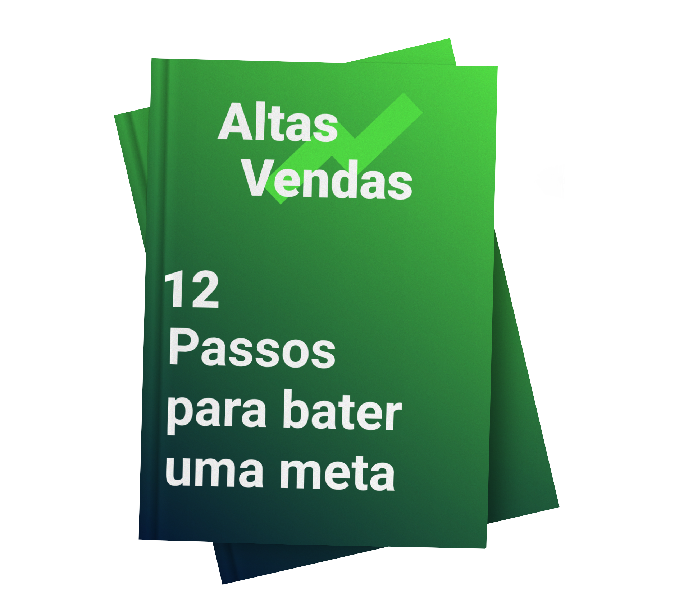

👊 Bata todas as suas metas!
Baseado em tudo que tenho lido até agora, criei um passo a passo das pessoas que têm sucesso e alcançam suas metas e objetivos parecem sempre seguir, mesmo que inconscientemente.

Baseado em tudo que tenho lido até agora, criei um passo a passo das pessoas que têm sucesso e alcançam suas metas e objetivos parecem sempre seguir, mesmo que inconscientemente.
Páginas
Capítulos
Downloads
Estrelas
Todos os anos escolho um assunto para estudar com profundidade e este ano o tema é ‘alta performance’. Na verdade, este ano criei uma novidade para mim mesmo: ao invés de só escolher um tema, escolhi uma pergunta para tentar responder. Neste ano, a minha pergunta é “por que algumas pessoas conseguem resultados excecionais e outras não?”
Baseado em tudo que tenho lido até agora, criei um passo a passo das pessoas que têm sucesso e alcançam suas metas e objetivos parecem sempre seguir, mesmo que inconscientemente. São 12 coisas que você precisa fazer para atingir um objetivo.
Baixe o Ebook agora